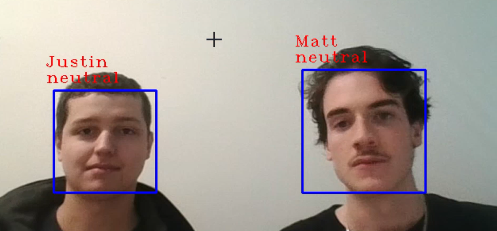
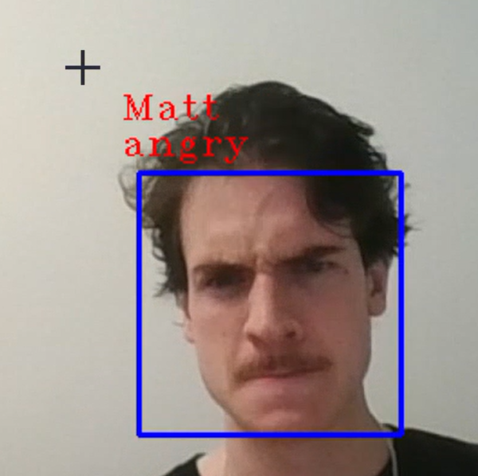

Emotional recognition using machine learning and facial recognition
The databases were very large and unruly to manage, so the solution was in trimming outliers, or bad reads of the face, both of which were expedited with the model trimming photos on it's own. It also proved costly to train the AI at times due to the size, so coordinating with my classmate on when to train, when to showcase, or when to analyze data was vital.

